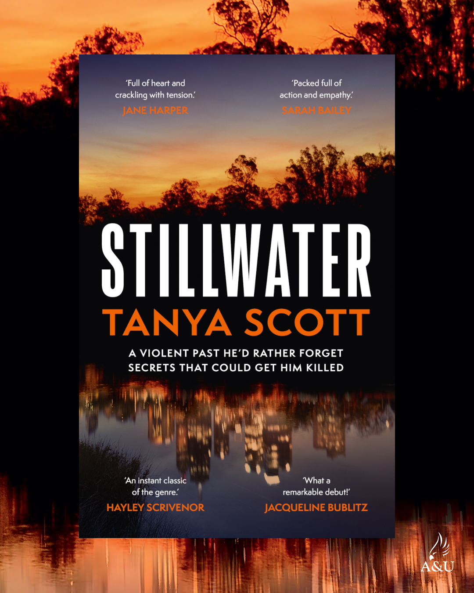

Tanya Scott is an Australian writer, doctor and educator. She is an accomplished survivor of near misses, including escaping from an engineering degree out of high school, crashing a car with a huntsman (spider) on her lap and getting caught in a rip while swimming off the Cocos Islands. She also managed to finish medical school with her sense of humour intact.
Over a varied medical career, she has learned more from her patients than from any textbook – not just about physical and mental health, but about humanity, resilience and the absurdity of life. While these themes inform her writing, her love of twisty mysteries has made her an accidental crime writer.
After growing up on the coast in western Victoria, Tanya studied and worked in Melbourne for over a decade, but always knew the beach would claim her back. She is now based on Wadawurrung country, on the Victorian Surf Coast, with her family and pets. When not writing, she can be found with her head in a book or braving the wind at the beach.
Did all her father’s secrets go to the grave?
Gus Alberici was many things: ex-footballer, notorious criminal, family man. Now he’s dead. To outsiders, that should be the end of the story. But for Georgie, it’s the beginning of a nightmare, because Gus wasn’t just a headline—he was her father.
When the body of one of Gus’s former associates is found on a family property, the police descend and old enemies come out of the woodwork. Georgie needs answers, and the one person who can help is Gus’s former fixer, Jack Quinlan.
But there’s a catch. Jack is done with the Alberici family, and he doesn’t want to be found.
Gus’s unfinished business refuses to stay buried, and Georgie unearths more than she bargained for. Someone is desperate to keep her from the truth. As she’s pulled deep into her father’s dangerous world, it’s impossible to know who to trust.
And when the threats target her family, she needs to decide how far she’ll go to protect them—with or without Jack’s help.
- AUSTRALIA / NEW ZEALAND
PRE-ORDER
- USA / CANADA
PRE-ORDER

When Jack Quinlan’s mother dies of a drug overdose, it’s not his father that raises him, but Gus—a ruthless crime boss who sees Jack for what he is: a whip-smart kid with untapped potential. It doesn’t take long for Gus to forge Jack into a weapon. But Jack was also self-aware enough to know where this sort of life was going to lead him. When the time was right, he got out. Or so he thought.
Seven years later, Jack is now Luke Harris, a regular guy putting himself through college and aiming for a real job and a real future. Falling in love. But Jack’s past isn’t so easily forgotten, and the bodies in his closet won’t forgive him.
When Luke’s newfound life collides with Gus’s underworld, survival becomes a deadly game. Luke must resurrect his dormant skills and confront the demons that threaten to consume him.